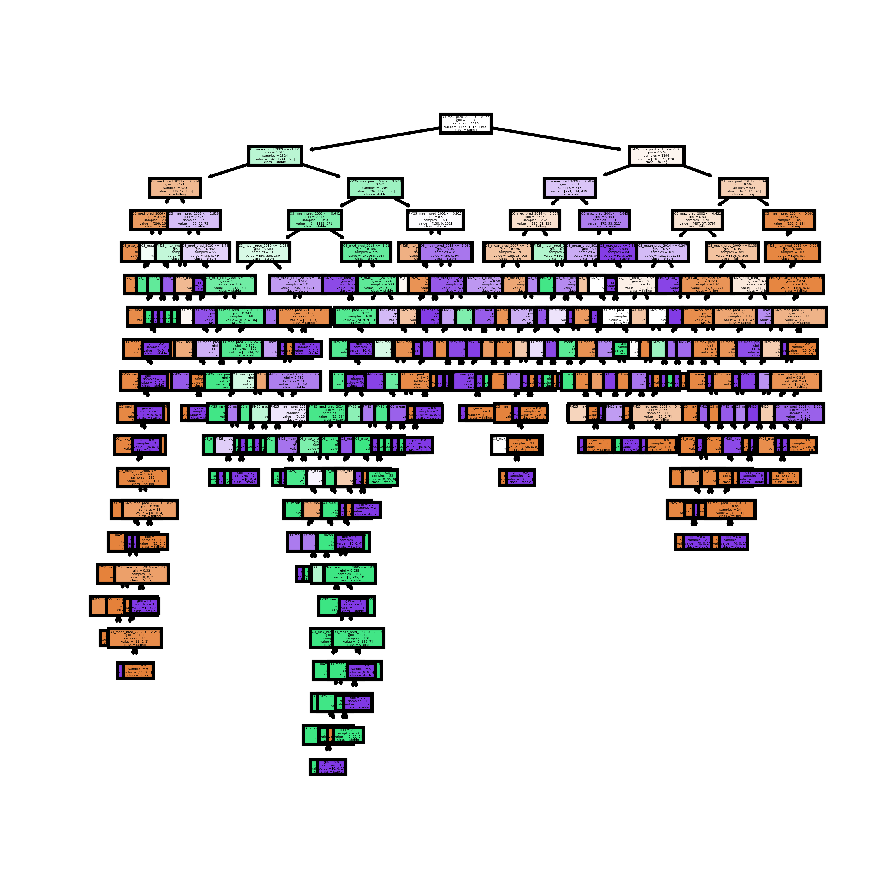
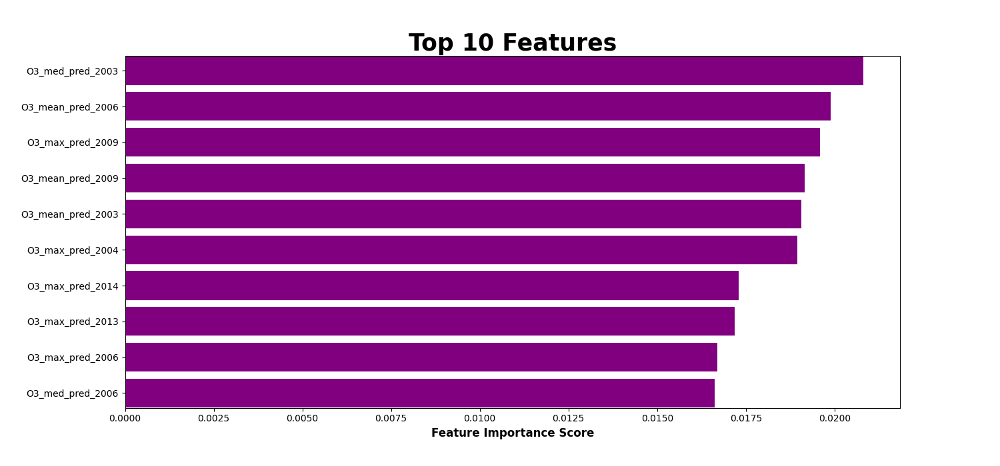

Project Breakdown
Machine Learning Model
The goal of the Machine Learning Model was to ingest the inputs of all counties FIPS along with the maximum, minimum, and mean values
for both air pollutants (PM2.5) and Ozone (ppb) and the cancer incidence trends associated with years 2000-2014.
Separate datasets with several million rows each were aggregated and
combined to form one cohesive model dataset. The model was trained to predict cancer incidence trends with the
combined dataset, then it was applied to a different 14-year time slice from 2003 to 2016 predicting cancer incidence
rates for counties where cancer incidence data was non-existent. Future versions of this model and web application could include
the prediction of other illnesses associated with environmental pollutants.
Decision tree sample

Feature Importances

Data Sources
- Daily PM2.5 Concentrations All County, 2001-2016 CDC dataset PM2.5
- Daily County-Level Ozone Concentrations, 2001-2016 CDC dataset Ozone (ppb)
- Cancer Mortality & Incidence Rates: (Country LVL) Kaggle dataset
- US County GeoJson dataset GeoJson dataset